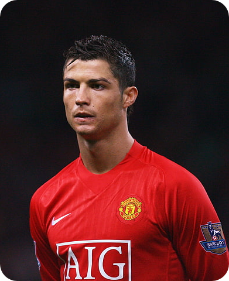
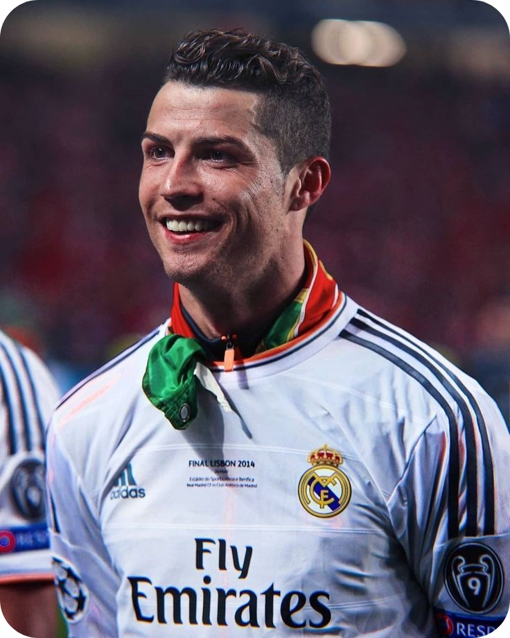

Quem é Cristiano Ronaldo?
é jogador de futebol considerado por muitos um dos melhores de todos os tempos. Português, começou a carreira no Sporting e já atuou por Manchester United, Real Madrid, Juventus, Atualmente joga pelo Al-Nassr, da Arábia Saudita e pela Seleção Portuguesa, onde é capitão. Foi cinco vezes campeão da Liga dos Campeões da Europa. Também foi campeão da Eurocopa com Portugal no que é considerado o maior título já conquistado pela equipe portuguesa. Disputou cinco Copas do Mundo. Atualmente, é o atleta com mais gols marcados por seleções nacionais.
Início de Carreira
O caçula de 4 irmãos, Cristiano Ronaldo já mostrava performance de destaque aos 8 anos de idade, quando iniciou sua carreira nas categorias de base do Clube de Futebol Andorinha de Santo Antônio. Em 1995, quando estava com 10 anos, Cristiano Ronaldo foi jogar no Clube Desportivo Nacional. Com o sucesso no clube, Cristiano assinou contrato com o Sporting Clube de Portugal por 2 anos. Posteriormente, No dia 14 de abril de 1997, Cristiano Ronaldo fez o teste no Sporting Lisboa e, com apenas 11 anos entrou para as categorias de base do clube no Sporting, Ronaldo acumulou grandes feitos, como a façanha de ter jogado, em uma única temporada, no sub-16, sub-17 e sub-18 e na equipe principal do clube.
Manchester United
Em 2003, Cristiano Ronaldo chamou a atenção do técnico do Manchester United, da Inglaterra. Foi contratado para substituir o jogador David Beckham, que havia sido contratado pelo Real Madrid, da Espanha. No Manchester, Ronaldo conquistou vários campeonatos e começou a mostrar seu estilo.
Real Madrid
Em 2008, depois de muitas especulações, Cristiano Ronaldo foi para o Real Madrid, e participou da temporada 2009-2010. Sua contratação foi a mais cara do clube, que tinha outros jogadores de destaque mundial como Kaká, Zidane, Ronaldo e Roberto Carlos, que fizeram parte da primeira fase das grandes estrelas do time espanhol, que ficaram conhecidos como os Galácticos. Na temporada 2014-15, Ronaldo chegou a marcar incríveis 61 gols, número nunca alcançado antes pelo clube durante uma temporada.
Prêmios Individuais
- 5 x Bola de Ouro
- 4 x Chuteira de Ouro
- 3 x Melhor Jogador da UEFA
- 2 x The Best FIFA
- 2 x Melhor Atacante da UEFA
- 1 x FIFA Melhor Jogador do Ano
- 1 x Puskás